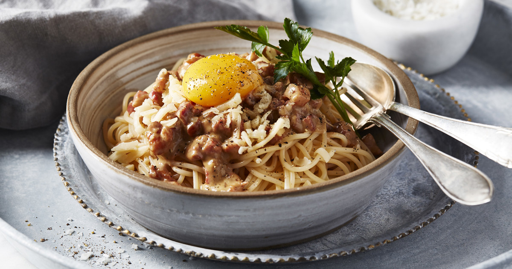

Ingredients (4 portions)
- 300g Spaghetti, or different pasta of your choice
- 150g smoked pork
- 1 tbsp butter
- 1/2 dl cream
- 1/2 tsp salt
- 1 garlic slice
- 3 dl torn cheese, or any cheese of your preference
- 2 cc black pepper
- 4 egg yolks
Steps
- Boil the pasta
- Slice the pork into dices and fry in butter until crisp
- Whisk the cream, salt, garlic and half of the cheese
- Touch down the pork and cheese mixture into the boiled pasta and stir firmly to achieve a creamy consistency
- Sprinkle the remaining cheese and add pepper
- Serve the pasta carbonara with an egg yolk, Enjoy!